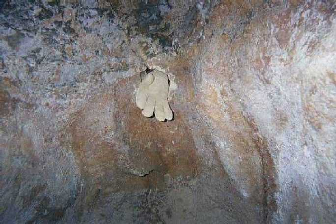
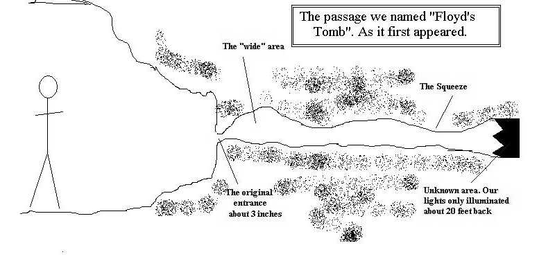

I will divide the text into two styles for the sake of clarity.
The normal text is taken directly from my caving journal.
After we explored all of the usual passages we climbed down to check out the hole. The hole is located deep in the cave, near the lowest part of the cave. It is on the side of a cave wall, about three feet from the floor. To look inside the hole I had to kneel down to duck under an overhang of rock.

a photo of the original opening. I put my glove in the hole for size reference.
I used my backup mini-mag light and held it inside the hole to see what I could see. I was excited by what I saw. The wall around the hole was about 3-5 inches thick. It led into a tight passage. The passage opened up a bit just inside the hole. It continued back about 10-12 feet in a small crawl space. After that it seemed to really open up! Although how much we couldn't tell. This could be a virgin passage. (Obviously no one has passed through this route, but there could be a way into the passage from the other side.) To even get to the crawl space we would have to enlarge the opening. Currently it is about the size of my fist. Once we get past the opening we would have a
tight crawl back to where it opened up. It would take some work, but we thought we could do it. We sat down for a few minutes to rest and contemplate our plan of attack. While we sat there in the darkness we could hear the wind howling from the other side of the passage. It was a low, eerie noise. We could also hear a low rumble from time to time. No big deal, though. The cave is in the vicinity of a highway that has heavy trucks drive on it. We figured the rumble was the effect of the trucks resonating through the rocks.
We determined that our best plan would be to haul a cordless drill into the cave to drill into the rock. Then we could take a bullpin and a small sledge hammer and break up the rock. It seemed pretty straight-forward. We would widen the hole big enough to squeeze in and see what was on the other side. The efforts to haul all of the equipment down to the hole would be a pain, but we hoped it would be worth it. I named the passage Floyd's Tomb, after Floyd Collins. It seemed to look like the tight spot where Floyd spent his last miserable days on earth.

a rough drawing of how the passage originally looked
We gathered up our gear and headed for the surface. Normally I couldn't care less if I ever came back into this cave. There is nothing special about it. But now I was psyched about getting back and getting through. We hadn't even left the cave and we were planning our return trip.
In an effort to present this experience in as accurate light as possible I will type my journal as I wrote it: sans grammar check. Please overlook my errors. My additional comments will help to clarify the things I wrote in my journal. ]